Temas de la Semana 1
¿Qué es PHP?
PHP es un lenguaje de programación que se ejecuta en el servidor y permite crear páginas web dinámicas. A diferencia de HTML, que solo muestra información estática, PHP permite procesar datos, conectarse a bases de datos, generar reportes, manejar sesiones y mucho más.
Es muy usado en el desarrollo web profesional y escolar, siendo parte esencial de muchas aplicaciones en línea.
¿Qué puede hacer PHP?
PHP da interactividad a las páginas web y permite crear aplicaciones completas:
- Generar contenido dinámico en páginas web.
- Conectarse a bases de datos (ej. MySQL).
- Procesar formularios y datos de usuarios.
- Crear sistemas de login y gestión de usuarios.
- Enviar correos automáticos o generar reportes.
Instalación de MAMP
- Descargar MAMP desde la página oficial.
- Elegir el instalador según tu sistema operativo (Windows o macOS).
- Ejecutar el instalador:
- Windows: MAMP_Setup.exe
- macOS: MAMP.pkg
- Aceptar los términos y condiciones.
- Seleccionar carpeta de instalación (Windows: C:\MAMP recomendado).
- Finalizar la instalación y abrir MAMP.
- Hacer clic en Start Servers.
- Guardar los proyectos en la carpeta htdocs.
- Verificar en el navegador:
http://localhost
Instalación de Visual Studio Code (VSC)
VSC es un editor de código gratuito que facilita trabajar con PHP, HTML y CSS. Tiene extensiones que ayudan a programar mejor.
- Descargar desde la página oficial.
- Elegir instalador según sistema operativo.
- Instalar con las opciones recomendadas.
- Abrir la carpeta de tu proyecto dentro de htdocs.
 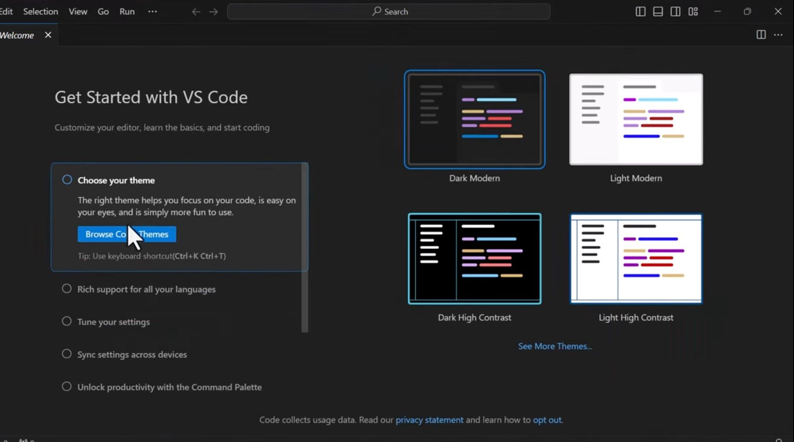
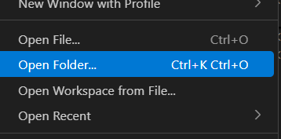
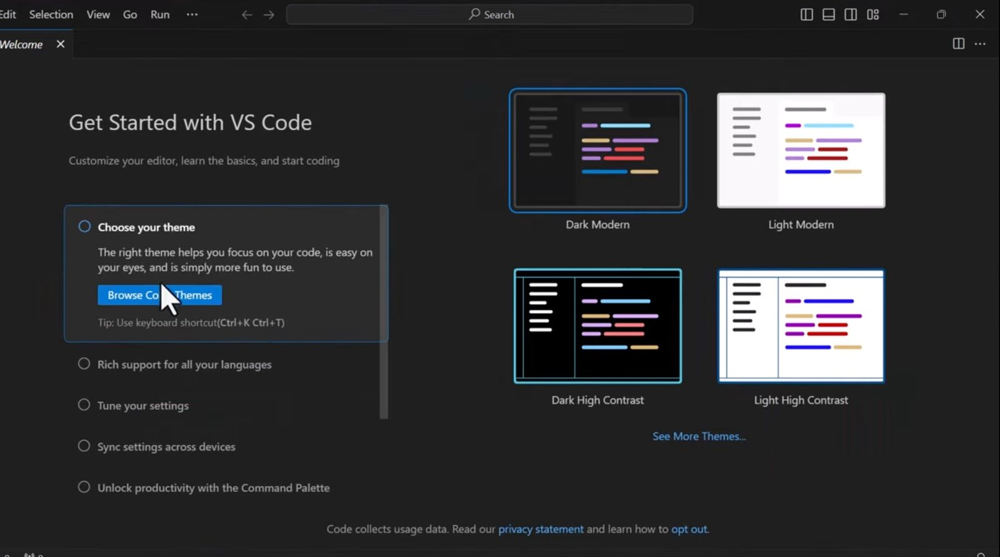
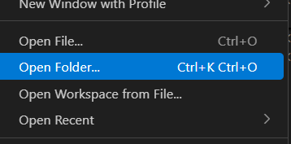
Carpeta de trabajo
Todos los proyectos se guardan en htdocs. Esto permite que MAMP pueda ejecutar tus archivos y los cambios se reflejen al instante.
Extensión de archivos PHP
Los archivos deben guardarse con .php. Ejemplo: hola.php. Ahora nos mostrará un ícono de un elefante morado.
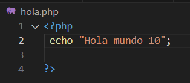Editar código PHP
El código PHP se escribe entre <?php y ?>. El servidor ejecuta estas instrucciones en tu navegador.
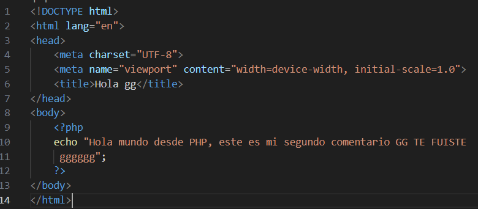Guardar archivos
Se guardan dentro de la carpeta del proyecto en htdocs para que MAMP los pueda ejecutar.
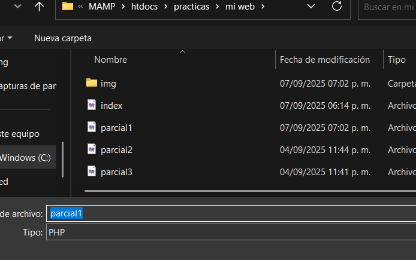Visualizar archivos en el navegador
Para abrir un archivo PHP:
1. Inicia MAMP.
2. Escribe en el navegador: http://localhost/nombreproyecto/archivo.php.
3. Se muestra lo que hayas escrito en tu archivo.
Variables en PHP
Las variables guardan información y siempre comienzan con $.
Ejemplo:
Variable A y B, para ver cuál es mayor.
Temas de la Semana 2
Comentarios
Sirven para explicar el código sin que se ejecute. Se usan para aclarar lo que hace el código y evitar errores. Sintaxis: // comentario de una línea, /* comentario de varias líneas */.
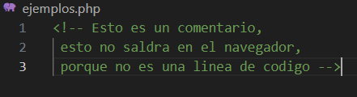Concatenación
Permite unir texto y variables para mostrarlos juntos. Se usa el operador ( . ). Ejemplo: echo "Hola " . $nombre; Esto muestra 'Hola' seguido del contenido de la variable $nombre.
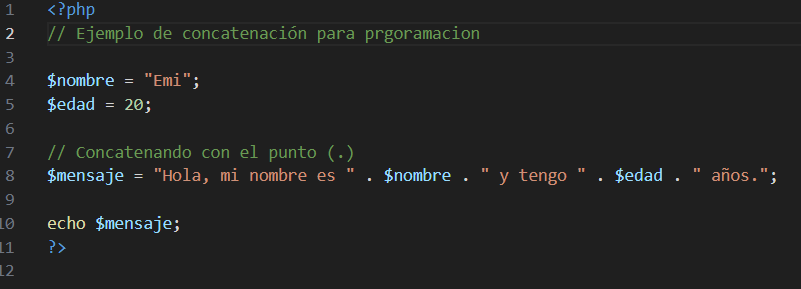Variables
Son espacios donde guardamos datos. Siempre empiezan con $ seguido del nombre. Ejemplo: $edad = 20; Podemos cambiar su valor en cualquier momento del programa.
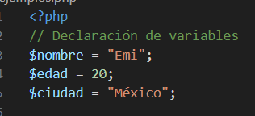Expresiones
Combinan valores, variables y operadores para producir un resultado. Ejemplo: $suma = 5 + 3; Devuelve 8. Se pueden usar dentro de operaciones o asignaciones.
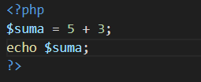Precedencia de operadores
Determina qué operación se hace primero en una expresión. Ejemplo: 2 + 3 * 4 → primero se multiplica, luego se suma. Podemos usar paréntesis () para cambiar el orden.
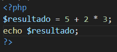Operadores aritméticos
Se usan para cálculos: + suma, - resta, * multiplicación, / división, % módulo (resto de una división). Ejemplo: 10 % 3 devuelve 1.
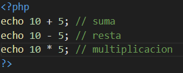Operadores de asignación
Asignan o modifican valores en variables. Ejemplo: $x = 10; $x += 5; ahora $x vale 15. También existen -=, *=, /= y %= para hacer operaciones y asignar al mismo tiempo.
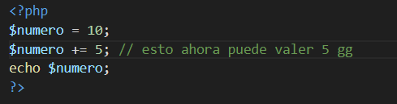Operadores de comparación
Comparan valores y devuelven true o false. Ejemplos: == igual, === idéntico, != diferente, > mayor, < menor, >= mayor o igual, <= menor o igual.
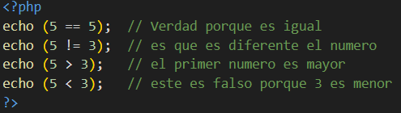Operadores de incremento/decremento
Aumentan o disminuyen el valor de una variable en 1. Ejemplo: $x++ suma 1 después de usar la variable, ++$x suma 1 antes de usarla. Lo mismo aplica con --$x y $x--.
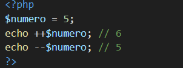Operadores lógicos
Se usan para combinar condiciones: && significa 'y', || significa 'o', ! significa 'no'. Ejemplo: if ($edad >= 18 && $sexo == "M") {...}
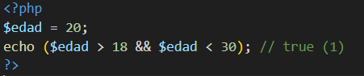Operadores para strings
Se usa el punto ( . ) para unir cadenas de texto. Ejemplo: $mensaje = "Hola" . " Mundo"; Esto devuelve 'Hola Mundo'.
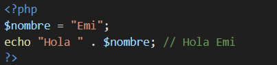Operadores para arrays
Permiten unir o comparar arreglos. Ejemplo: $a + $b une dos arrays. También se puede usar == para comparar que tengan las mismas claves y valores.
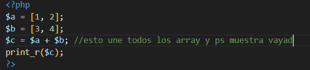Operadores de tipo
Sirven para revisar el tipo de dato o clase de un objeto. Ejemplo: instanceof verifica si un objeto pertenece a cierta clase.
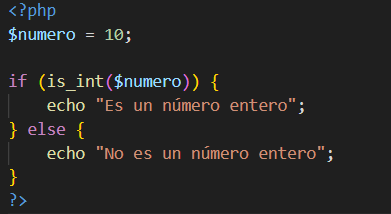Estructuras de control
Permiten decidir qué código se ejecuta según condiciones o repeticiones. Ejemplos: if, else, switch, while, for. Son fundamentales para programar decisiones y ciclos.
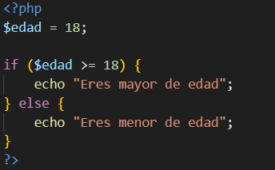Sentencia if
Ejecuta un bloque solo si se cumple la condición. Ejemplo: if ($edad >= 18) { echo "Mayor"; }. Podemos agregar else o elseif para más condiciones.
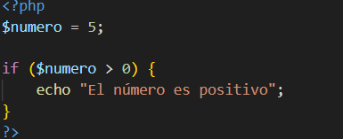Sintaxis alternativa de estructuras de control
Es una forma más clara de escribir if, for o while usando : y cerrando con endif, endforeach, endwhile. Esto hace que el código sea más legible, especialmente en HTML mezclado con PHP.
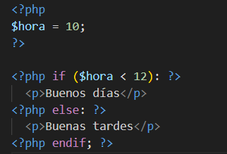